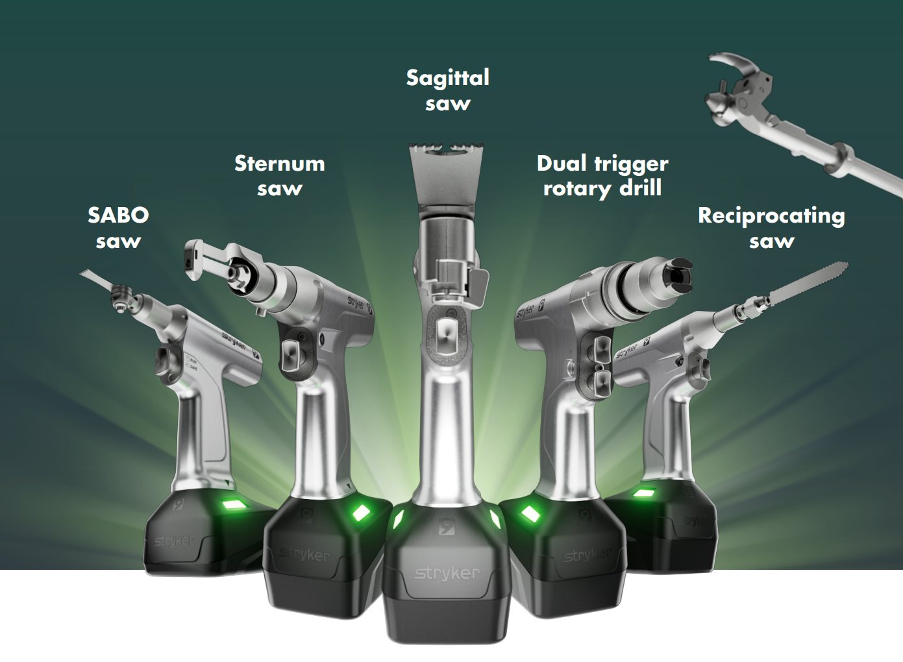
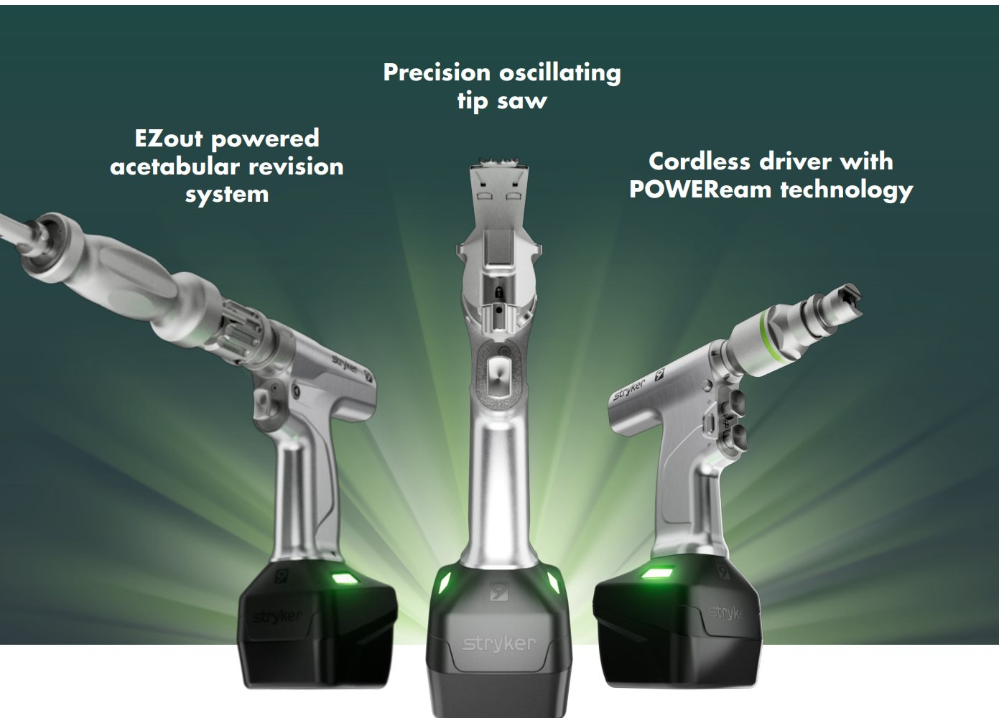
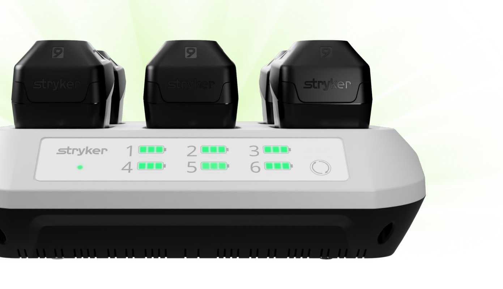
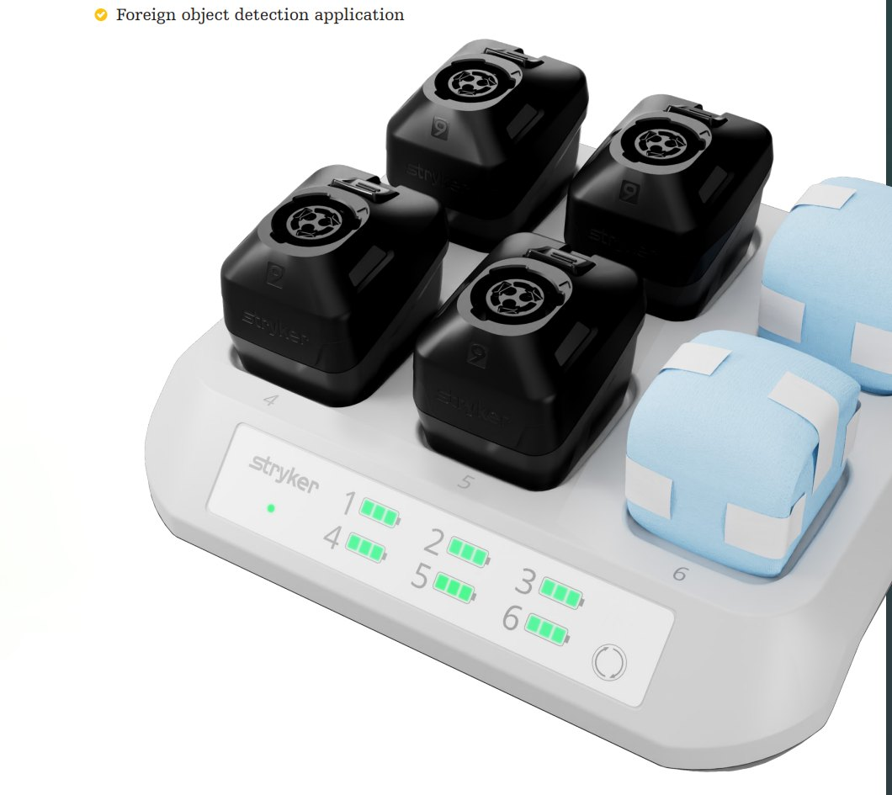
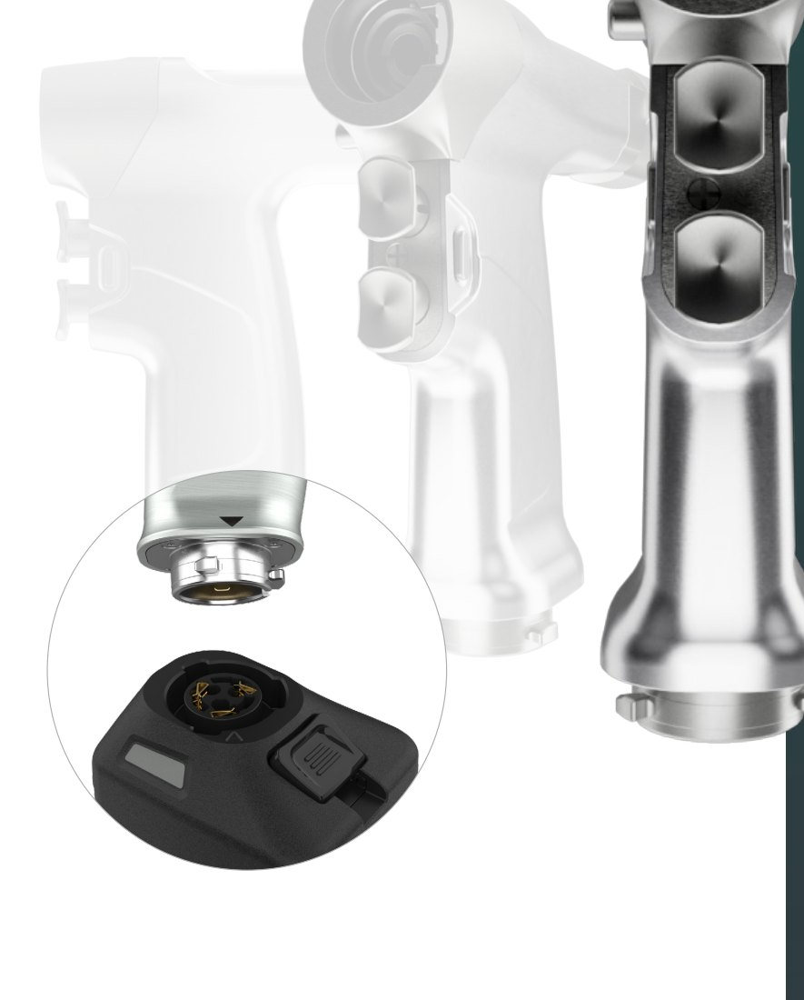

System 9 Power Tools
Built on trust. Empowering you. — 최신 배터리 기술, 최초의 무선 충전기, 새롭게 설계된 Handpiece


40년의 Power tool 계보
OP 90 (1983) → S2000 (1991) → System 4 (1998) → System 5 (2002) → 6 (2006) → 7 (2012) → 8 (2017) → System 9 (2023)
최초의 무선 충전기
멸균 후에도 멸균 상태를 유지하며 충전(blue wrap 위에서 충전 포함)
IPX 9 · Anodized
고압수·강한 세척제 노출에도 견디는 코팅과 IPX 9 등급으로 장기 성능 유지
Handpiece line-up
대형 골(Large bone)과 중형 골(Medium bone)을 위한 다양한 Handpiece
| Handpiece | 설명 (Description) | Part No. |
|---|---|---|
| Sternum saw | 흉골 절개(Sternotomy)용 Saw — System 9 Large bone power | 9207-000-000 |
| Sagittal saw | Large bone sagittal saw | 9208-000-000 |
| Reciprocating saw | Large bone reciprocating saw | 9206-000-000 |
| Stryker Precision Saw | Precision oscillating tip saw — 발목·어깨·고관절·슬관절 Arthroplasty용 정밀 Cartridge 확장 라인 | 9209-000-000 |
| Single / Dual trigger rotary drill | Drill · cut · ream — POWEReam technology로 토크 대폭 증가 | 9203-000-000 / 9205-000-000 |
| EZout System / EZout Saw system | Powered acetabular revision system — 제어된 파워로 예측 가능한 절삭 | 9202-999-000 / 9202-000-000 |
| Cordless driver (Medium bone) | Cordless driver with POWEReam technology | 4605-000-000 |
| CD NXT handpiece / SABO Sagittal Saw (Medium bone) | Medium bone power | 4607-000-000 / 4608-000-000 |
출처: System 9 Power tools 브로셔(D0000239584 Rev AA) Ordering information. 국내 수입 허가·공급 구성은 담당자에게 확인하세요.
Battery · Charger · Handle
수술 전·중·후 모든 접점을 다시 설계
Battery visibility
| Indicator | Meaning |
|---|---|
| Solid green | Fully charged |
| Blinking amber | Low battery (< 2 minute cut) |
| Solid amber | Fully depleted or error detected |
더 밝고 재배치된 Battery indicator로 술자와 수술팀의 가시성을 높였고, Battery housing에 새 접점을 적용해 내구성을 개선했습니다.


Wireless Charger
- 어떤 환경에서도 충전 가능한 가장 다양한 충전 방식
- 시술 전 Battery 상태 확인
- 단순한 User interface
- 멸균 후 멸균 상태 유지 + blue wrap 위 충전
- 다양한 충전 방식을 수용하는 Custom top housing
- Foreign object detection
Charger: 9110-120-000US · Large battery pack 9215-000-000 · Small battery pack 9212-000-000
Handle on design & comfort
- Thoughtful contours: 손바닥에 맞는 균형 설계, 절삭 중 압박점 감소
- Built to outlast: 가장 견고한 Anodized coating + IPX 9 등급
- Improved safety pockets: 우발적 작동 방지
- Twist-lock: Handpiece-배터리 연결 시 촉각·시각 피드백으로 확실한 조립

Service & Support · "We've got you covered"
Cleaners · Smart Equipment Management · ProCare Services
Cleaners & detergents
Auto wash · Manual wash · Ultrasonic · Point-of-use pretreatment · Lubrication 용 Auto62 / Blu62 / E62 제품군
Smart Equipment Management (SEM)
Handpiece·Battery·Charger의 사용 데이터를 기반으로 장비 관리 최적화 (온라인 모듈, 구독형)
ProCare Services
OEM 전문 기술자 · 정품 부품 · 대여(Loaner) 장비로 Uptime 극대화 · 맞춤 서비스 플랜
Cordless driver · 부속 (Attachments) 예시
| Part No. | Description | Part No. | Description |
|---|---|---|---|
| 4100-700-000 | High speed bur attachment | 4100-600-000 | 1:1 Bur attachment |
| 4100-400-000 | Sagittal saw attachment | 4100-355-000 | Radiolucent right angle drive |
| 4505-133-000 | 1/4" (6.4mm) Locking keyless chuck | 4505-134-000 | 5/32" (4.0mm) Locking keyless chuck |
| 4405-210-000 | POWEReam large AO | 4100-110-000 | Small AO drill |
전체 Attachment 목록과 사이즈는 브로셔 Ordering information 참고. High-Speed Drill(CORE 2) 페이지도 함께 확인하세요.